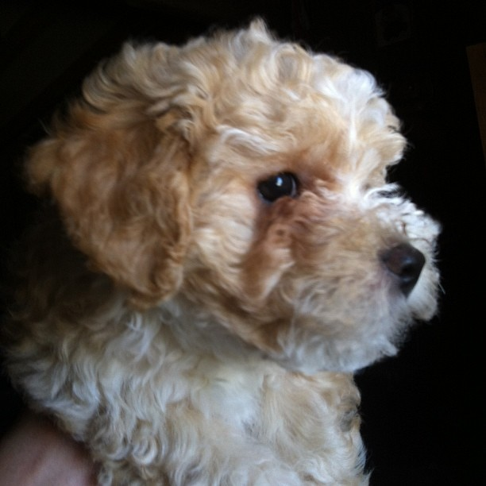
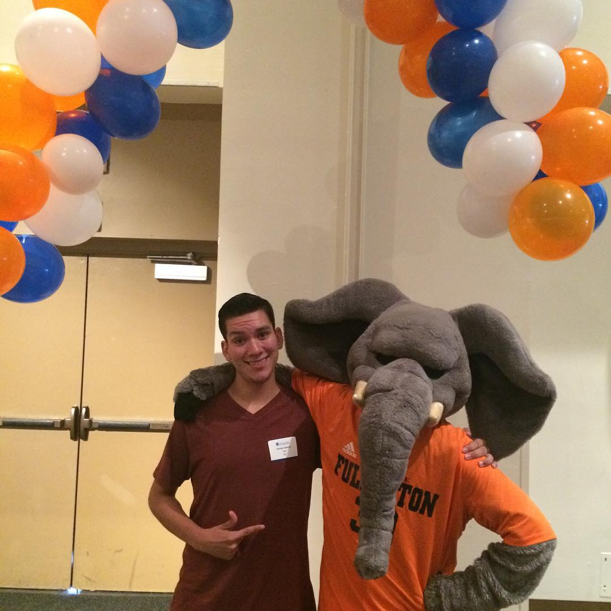
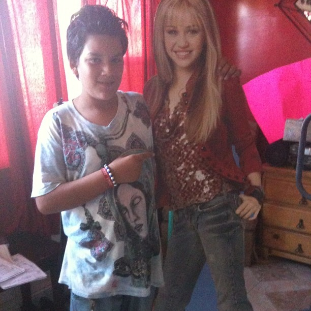

Pictures I Find Interesting
This picture is one of my dogs. I like it because I have always been a very big pet guy, so when I see this picture, it reminds me of home
This is a picture of when I went to the CSUF Orientation (I think). I chose this picture because it reminds me of when I started college and how much out of my comfort zone I was. Although I was smiling, you can tell that I look really awkward and somewhat uncomfortable. I feel like that is how I felt a lot when I first came to CSUF as everything seemed so new to me. In the end, though, I'm proud of this photo because it was one of the first few times where I learned to embrace the awkwardness, rather than avoid it, and I ended up having a great time.
I also chose this picture because I think it really showcases my kind of humor as a kid, and even today. Not only did I meet the legendary Hannah Montanna, but I also was rocking a funky hairstyle too.